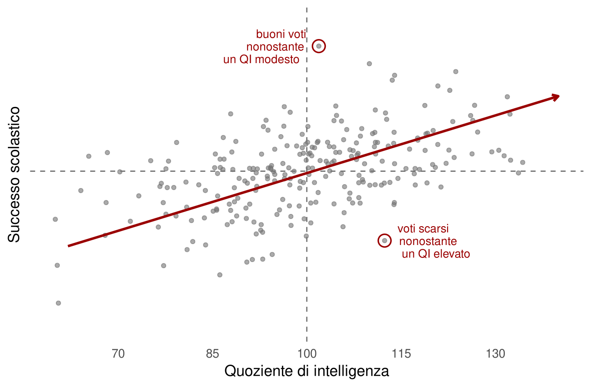
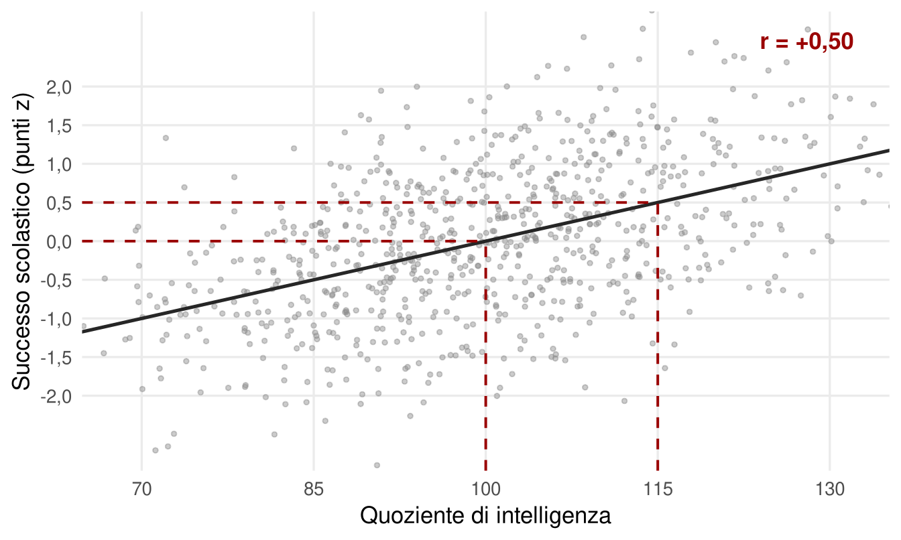
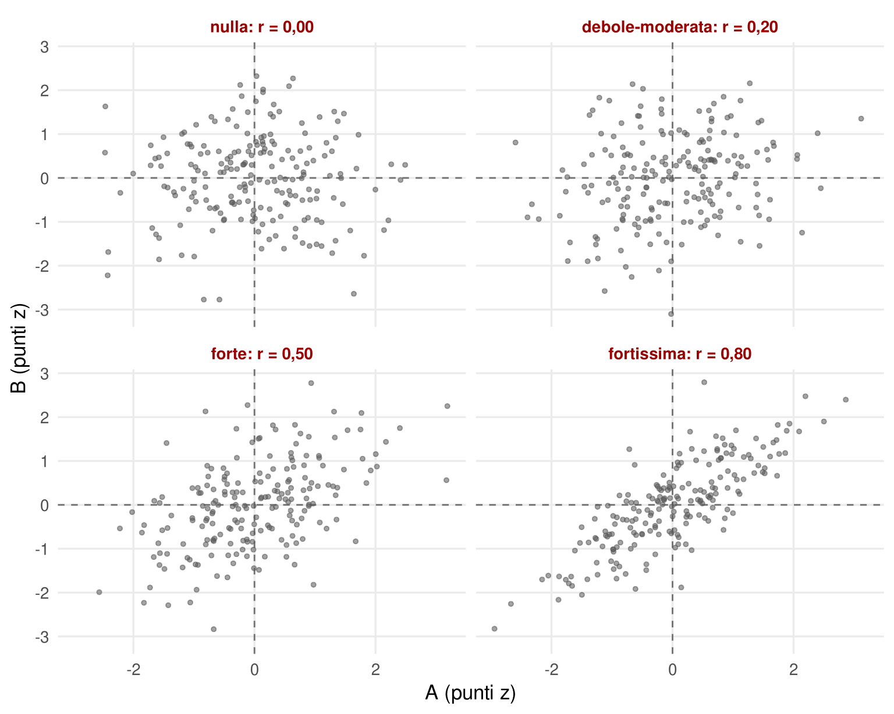
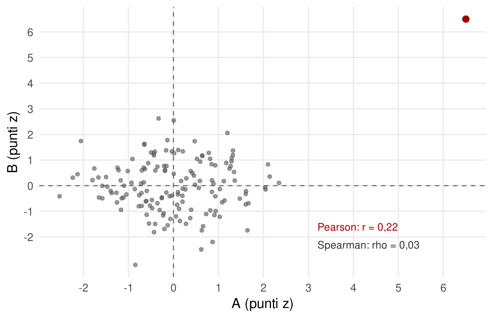
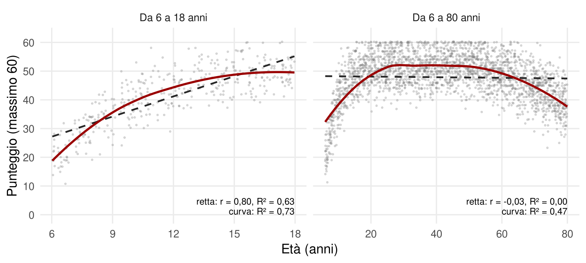
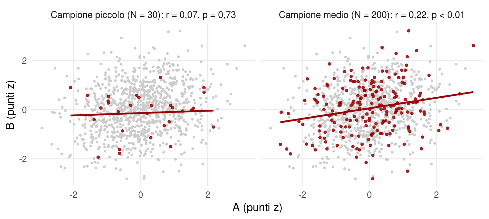
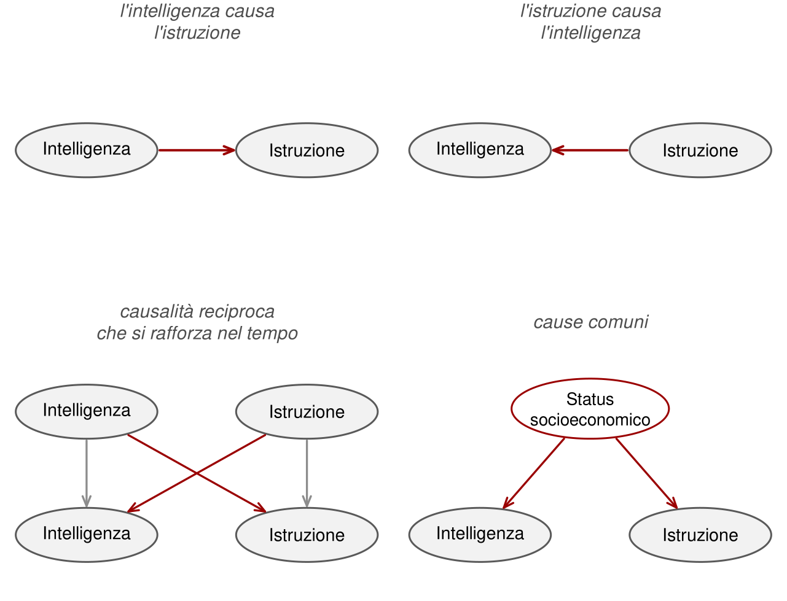
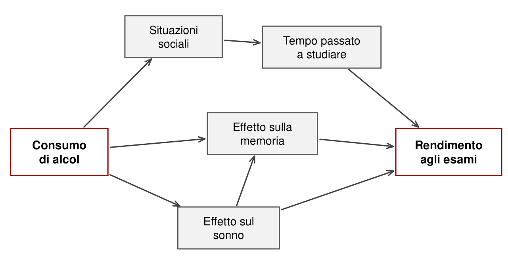
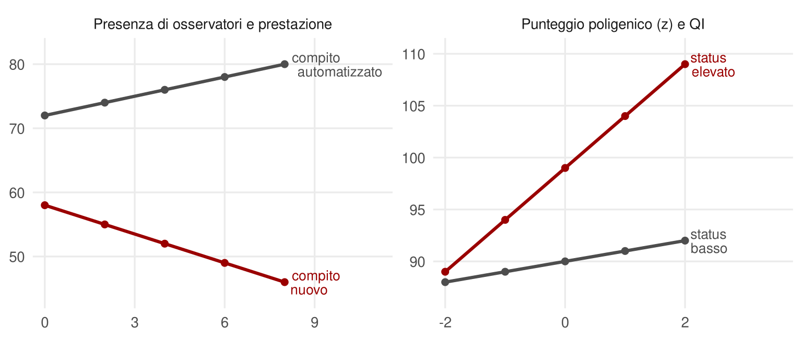

3 Correlazione e differenze individuali
Chi ha un QI più alto tende a ottenere voti scolastici migliori. Eppure tutti conoscono qualcuno brillante con una pagella mediocre e qualcuno con risultati eccellenti senza particolari doti di ragionamento. Le due osservazioni non si contraddicono. Una tendenza può essere solida e ammettere moltissime eccezioni. La correlazione è lo strumento che permette di dire quanto.
Quasi tutto ciò che sappiamo sulle differenze individuali si esprime con correlazioni: fra prove cognitive, fra fratelli, fra un punteggio e un esito scolastico o lavorativo. Conviene quindi capire bene che cosa riassume questo numero e, soprattutto, che cosa lascia fuori.
3.1 Che cos’è una correlazione
La correlazione è una misura statistica della direzione e dell’intensità della relazione fra due variabili quantitative. L’idea intuitiva è semplice: se una persona sta sopra la media in una variabile, tende a stare sopra la media anche nell’altra, sotto, oppure è del tutto indifferente?
Le domande quotidiane hanno la stessa forma. Se una persona studia più della media, tende a prendere un voto più alto? Se oggi fa più caldo del solito, si vendono più gelati? Se un genitore ha un QI sopra la media, i figli tendono ad averlo sopra la media? E se oggi si vendono più gelati del solito, ci saranno più omicidi in città? L’ultima domanda sembra assurda, e ci torneremo.
Il coefficiente di correlazione di Pearson, indicato con r, riassume la risposta in un numero compreso fra −1 e +1; lo zero indica l’assenza di relazione lineare. Davanti a una correlazione conviene porsi sempre tre domande. È plausibile che le due variabili siano associate davvero, cioè che la correlazione sia diversa da zero? Se una variabile è sopra la media, l’altra tende a stare sopra o sotto? È la direzione, data dal segno. Quanto sono rare le eccezioni alla regola? È l’intensità, data dal valore assoluto: quanto i punti si dispongono vicino a una retta.
Il coefficiente non dipende dall’unità di misura. Esprimere i voti in decimi o in trentesimi, o il ragionamento in punti grezzi o in punti QI, non cambia r. Conta solo quanto stretta è la relazione fra le posizioni delle persone nelle due distribuzioni.
3.2 Un esempio: QI e voti scolastici
Nelle sintesi della letteratura la correlazione fra QI e risultati scolastici è dell’ordine di 0,5 (Roth et al., 2015). La Figura 3.1 mostra che aspetto ha una correlazione di questa grandezza. Ogni punto è una persona. La tendenza è evidente: chi sta a destra della media nel QI sta più spesso sopra la media nei voti. Ma è una tendenza statistica, mai deterministica. Ci sono persone con buoni voti nonostante un QI modesto e persone con voti scarsi nonostante un QI elevato, per i motivi più svariati. Le eccezioni non smentiscono la correlazione: sono già incluse nel valore 0,5.
Che cosa significa, concretamente, r = 0,50? Un errore frequente è leggerlo come una percentuale di persone: non vuol dire che metà delle persone segue la regola e metà no. Il modo più semplice di intuirlo passa per le deviazioni standard. Se una persona è una deviazione standard sopra la media nel QI, cioè a 115, ci si aspetta che sia in media mezza deviazione standard sopra la media nei risultati scolastici (Figura 3.2). La correlazione dice di quanto, in media, la posizione in una variabile si trasferisce all’altra. Vale per il coefficiente classico di Pearson, e il capitolo sulle distribuzioni darà a questa idea la forma precisa dei punti z.

3.3 Quanto è grande una correlazione
Esistono etichette di comodo per la grandezza di r (Figura 3.3). Una correlazione nulla descrive due cose che non c’entrano niente l’una con l’altra. Attorno a 0,20 si trova il caso più tipico di effetto vero in psicologia: una rassegna di centinaia di meta-analisi sulle differenze individuali ha trovato proprio un valore tipico di questo ordine (Gignac & Szodorai, 2016). Una correlazione di 0,50, come quella fra QI e voti, è forte: variabili evidentemente molto legate. Una correlazione di 0,80, in psicologia, indica spesso la stessa cosa misurata in due modi diversi, anche se non basta da sola a stabilire che due prove misurino lo stesso costrutto.

Le etichette vanno usate con prudenza, perché la grandezza di un effetto dipende dal contesto. Anche un r piccolo può contare: un fattore che sposta di poco la probabilità di un esito, applicato a milioni di persone o cumulato per anni, può avere conseguenze consistenti (Funder & Ozer, 2019). Il giudizio sulla grandezza va quindi legato alla domanda: spiegare un meccanismo, prevedere un singolo caso o stimare un effetto su una popolazione sono obiettivi diversi.
3.4 Casi estremi e relazioni non lineari
Il coefficiente di Pearson ha due punti deboli che conviene conoscere.
Il primo sono i casi estremi. Pearson pesa le distanze dalla media, e un singolo punto molto lontano dagli altri può spostare r in modo sensibile. Nella Figura 3.4 una nuvola senza alcuna relazione diventa una correlazione di 0,22 per colpa di un solo caso. Un rimedio è il coefficiente rho di Spearman, che lavora sui ranghi: ogni valore è sostituito dalla sua posizione nel campione. Il caso estremo diventa così semplicemente il primo della classifica, non un punto fuori dalla distribuzione, e la correlazione torna vicina a zero. Non è però una scorciatoia automatica: un valore estremo può essere un errore di inserimento da correggere oppure il dato più interessante del campione. Prima di scegliere il coefficiente, bisogna guardare i dati (Schober et al., 2018).

Il secondo punto debole è la forma della relazione. Pearson misura l’associazione lineare. Relazioni non lineari sono comuni quando si studia lo sviluppo: molte abilità crescono rapidamente nell’infanzia, rallentano nell’adolescenza, restano stabili e poi declinano. La Figura 3.5 mostra punteggi simulati in una prova di ragionamento con un massimo di 60 punti. Fra 6 e 18 anni una retta descrive abbastanza bene la crescita, anche se una curva flessibile fa meglio. Sull’intero arco di vita, invece, la correlazione lineare è praticamente nulla, benché il punteggio dipenda chiaramente dall’età. Un r nullo dice «nessuna tendenza lineare», non «nessuna relazione». Curve flessibili, come le interpolazioni locali, descrivono meglio queste traiettorie, al prezzo di essere meno facili da riassumere in un numero. Una parabola, cioè una relazione quadratica, è un compromesso spesso deludente: prevede discretamente in media e sbaglia di molto proprio dove la curva cambia forma.

3.5 Correlano davvero?
Se le cose correlano davvero, non lo fanno «e basta»: c’è un motivo. Ed è sulle correlazioni che si regge una parte enorme della ricerca non sperimentale. Prima di cercare il motivo, però, bisogna accertare che la correlazione osservata nel campione sia attendibile, cioè presumibilmente diversa da zero nella popolazione da cui il campione proviene.
Una correlazione calcolata su un campione è una stima. Se lo stesso studio fosse ripetuto su altre persone, il valore cambierebbe, e quanto cambierebbe dipende soprattutto dalla numerosità. Nella Figura 3.6 la popolazione, in grigio, ha una correlazione vera di 0,20. Un campione di 30 persone, estratto a caso, dà 0,07; uno di 200 dà 0,22. Con 30 persone si possono ottenere valori vicini a zero, negativi, oppure doppi del valore vero; con 200 la stima è molto più stabile. Un piccolo studio che trova r = 0,45 non ha quindi scoperto un effetto grande: ha ottenuto una stima molto imprecisa.

Un metodo fondamentale, anche se non l’unico, per decidere è il test di significatività: chiede se il valore osservato sia compatibile con una popolazione in cui la correlazione è zero. Il valore p misura questa compatibilità. Non misura la grandezza dell’effetto né la probabilità che l’ipotesi sia vera (Wasserstein & Lazar, 2016). Una correlazione di 0,20 può essere «non significativa» con 30 persone e «significativa» con 200: è cambiata la precisione, non l’effetto. Per questo conviene riportare sempre anche un intervallo di confidenza, che mostra l’ampiezza dell’incertezza.
3.6 Spiegare perché correlano
Se due variabili correlano davvero, le possibilità principali sono quattro: A causa B; B causa A; le due si influenzano a vicenda, magari rafforzandosi nel tempo; oppure esistono cause comuni.
Un caso che riguarda proprio l’intelligenza è la correlazione fra QI e istruzione (Figura 3.7). L’intelligenza favorisce la prosecuzione degli studi? L’istruzione aumenta le abilità cognitive? Le due cose si alimentano a vicenda nel tempo? Oppure condizioni familiari come lo status socioeconomico influenzano entrambe? Per rispondere non basta la correlazione. Servono studi longitudinali, che mostrino se una variazione individuale nell’una anticipa una variazione nell’altra, e analisi che verifichino se la correlazione si riduce confrontando persone con condizioni ambientali simili. La risposta che emerge da diversi studi è che sono all’opera sia una causalità reciproca, compreso un effetto causale dell’istruzione sui punteggi, sia cause comuni come lo status socioeconomico della famiglia (Ritchie & Tucker-Drob, 2018). Anche gli esperimenti naturali, come i cambiamenti di legge sull’obbligo scolastico, sono stati decisivi.

L’esempio dei gelati è più netto. Nei giorni in cui si vendono più gelati avvengono anche più omicidi e più annegamenti. Nessuno pensa che i gelati rendano violenti o facciano annegare: il caldo porta le persone fuori casa, in spiaggia e in strada. La temperatura è una causa comune. In rete si trovano intere raccolte di correlazioni assurde, come quella fra numero di pirati e riscaldamento globale, ottenute confrontando serie temporali che crescono o calano per motivi indipendenti. Fanno sorridere, ma ricordano un fatto serio: una correlazione da sola non indica la direzione causale né esclude terze variabili (Rohrer, 2018). Correlazione non significa causalità, anche se spesso, dietro, qualche causalità c’è. E la sequenza temporale aiuta senza risolvere tutto: se A precede B, B non può aver causato A, ma resta possibile che una terza variabile abbia preceduto entrambe.
3.7 Mediazione e moderazione
Due concetti aiutano a precisare le ipotesi causali. Si parla di mediazione, o causazione indiretta, quando A influenza B attraverso una o più variabili intermedie. Un consumo elevato di alcol peggiora il rendimento agli esami? Se sì, probabilmente non in modo diretto, ma attraverso più percorsi: effetti sul sonno e sulla memoria, e situazioni sociali che sottraggono tempo allo studio (Figura 3.8). Una mediazione stimata con dati raccolti in un unico momento, però, non dimostra il processo nel tempo (Maxwell & Cole, 2007).

Si parla di moderazione, o causazione modificata, quando la relazione fra A e B cambia in funzione di una terza variabile (Baron & Kenny, 1986). La presenza di osservatori tende a migliorare la prestazione in compiti già automatizzati e a peggiorarla in compiti nuovi (Zajonc, 1965): il tipo di compito modera l’effetto del pubblico. Nel campo dell’intelligenza un esempio discusso riguarda lo status socioeconomico, che in alcuni studi statunitensi sembra modificare quanto le differenze genetiche si traducono in differenze di punteggio (Turkheimer et al., 2003). Entrambi i casi sono nella Figura 3.9. Ne riparleremo nel capitolo sull’ereditabilità, insieme ai limiti di questo risultato.

3.8 Quattro controlli prima di fidarsi
Una correlazione è uno dei risultati più semplici della ricerca e uno dei più facili da interpretare male. Prima di trarne conclusioni conviene controllare quattro cose: il segno, che dice la direzione; l’intensità, da leggere nel contesto della domanda; la forma dei dati, che può rendere il coefficiente fuorviante; il disegno dello studio, che decide quali spiegazioni restano in gioco. Saltare l’ultimo passaggio è l’errore più comune. Ed è quello che produce i titoli di giornale peggiori.